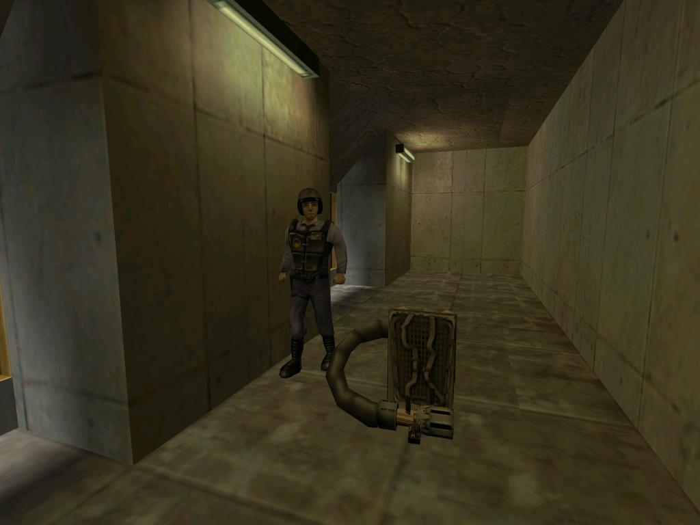

Barneys in Crossfire
If the multiplayer level Crossfire is loaded as a single player level, there will be two Barneys on the map. One will be in the left bunker, while the other will be next to the Gluon Gun.
Since Crossfire was intended for multiplayer gameplay, these
Barneys go unused.
Their purpose remains unknown.